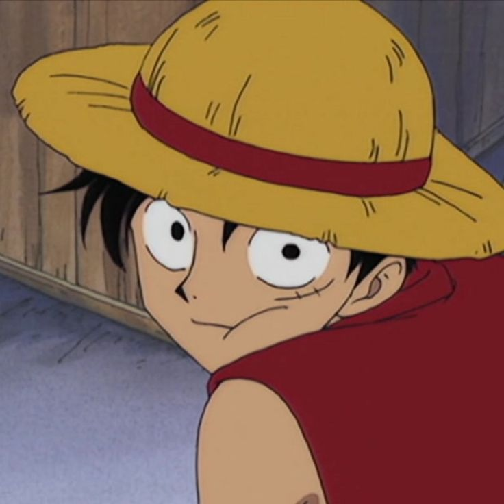
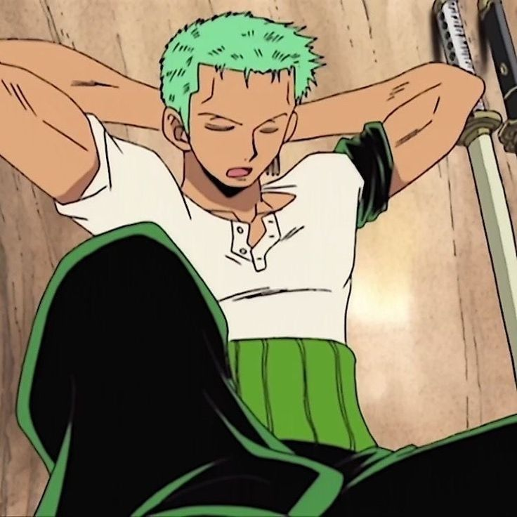
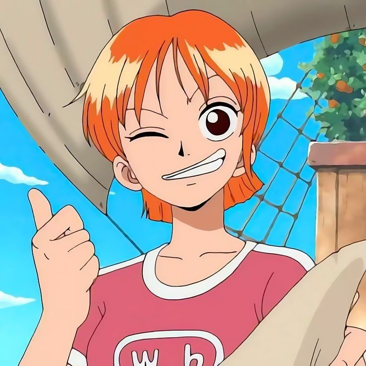
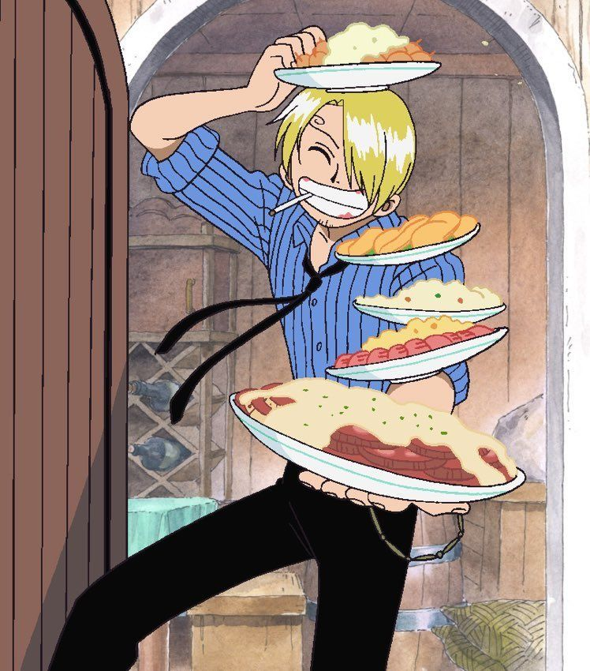
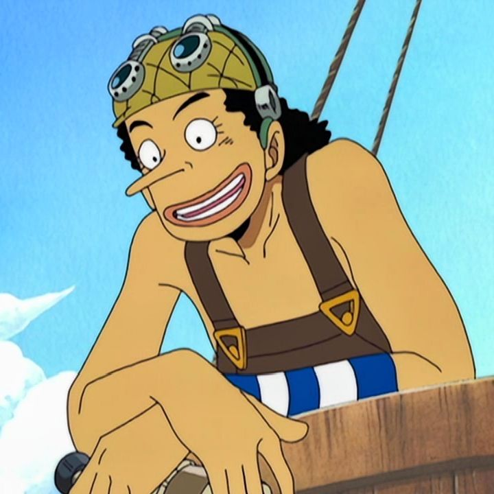
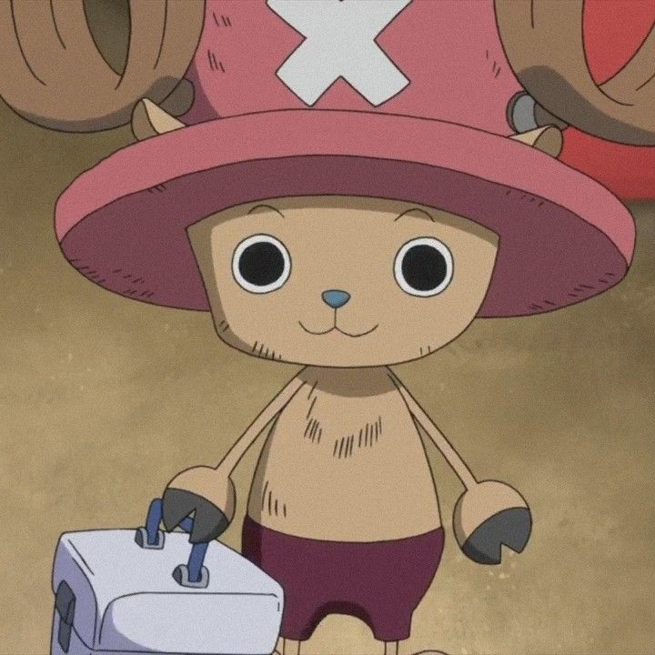
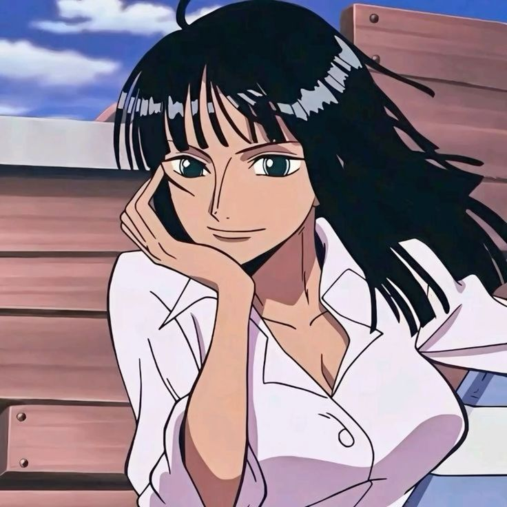
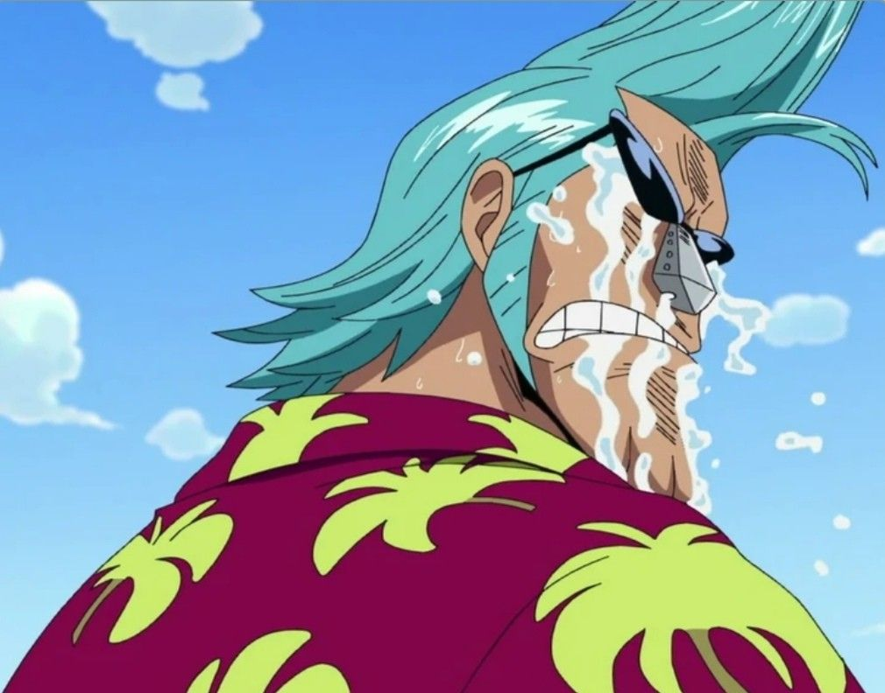
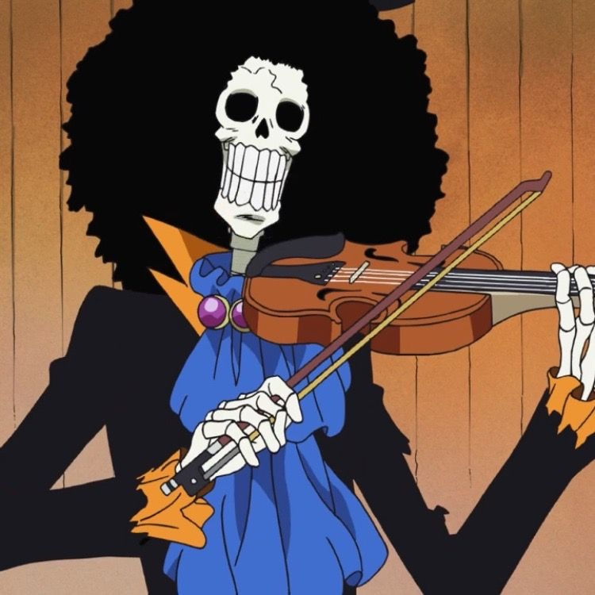

A Tripulacao do Chapéu de Palha

Monkey D. Luffy
Capitão
O homem que se tornará o Rei dos Piratas. Usuário Hito Hito no Mi: Modelo Nika.

Roronoa Zoro
Espadachim/Imediato
Mestre do estilo de três espadas (Santoryu), o imediato do Luffy. Seu sonho é se tornar o melhor espadachim do mundo.

Nami
Navegadora
Nossa gatuna, é uma navegadora genial cujo sonho é desenhar seu próprio mapa de todo o mundo.

Vinsmoke Sanji
Cozinheiro
Especialista em chutes e mestre culinário. Seu sonho é procurar o lendário mar "All Blue" e é conhecido por cortejar muitas damas.

Usopp
Atirador
O bravo guerreiro do mar (em treinamento). Um mestre da pontaria e inventor, seu sonho é se tornar um bravo guerreiro do mar e contar histórias incríveis.

Tony Tony Chopper
Médico
Uma rena que comeu a Hito Hito no Mi. Seu sonho é se tornar um médico capaz de curar qualquer doença, sendo o coração gentil da tripulação.

Nico Robin
Arqueóloga
A única capaz de ler os Poneglyphs. Usuária da Hana Hana no Mi. Seu sonho é desvendar a verdadeira história do mundo.

Franky (Cutty Flam)
Carpinteiro Naval
O construtor ciborgue do Thousand Sunny. Um engenheiro genial que se alimenta de cola e vive de forma SUUUUUPER extravagante. Seu sonho é construir um navio que possa navegar ao redor do mundo.

Brook
Músico
Um esqueleto cantor que voltou à vida graças à Yomi Yomi no Mi. Seu sonho é reencontrar seu amigo Laboon. Yohohoho!

Jinbe
Timoneiro
O mestre do Karatê Homem-Peixe e ex-Shichibukai. Um guerreiro honrado que traz sabedoria e força bruta para proteger o bando. Seu sonho é proteger os fracos e promover a paz entre humanos e peixes.